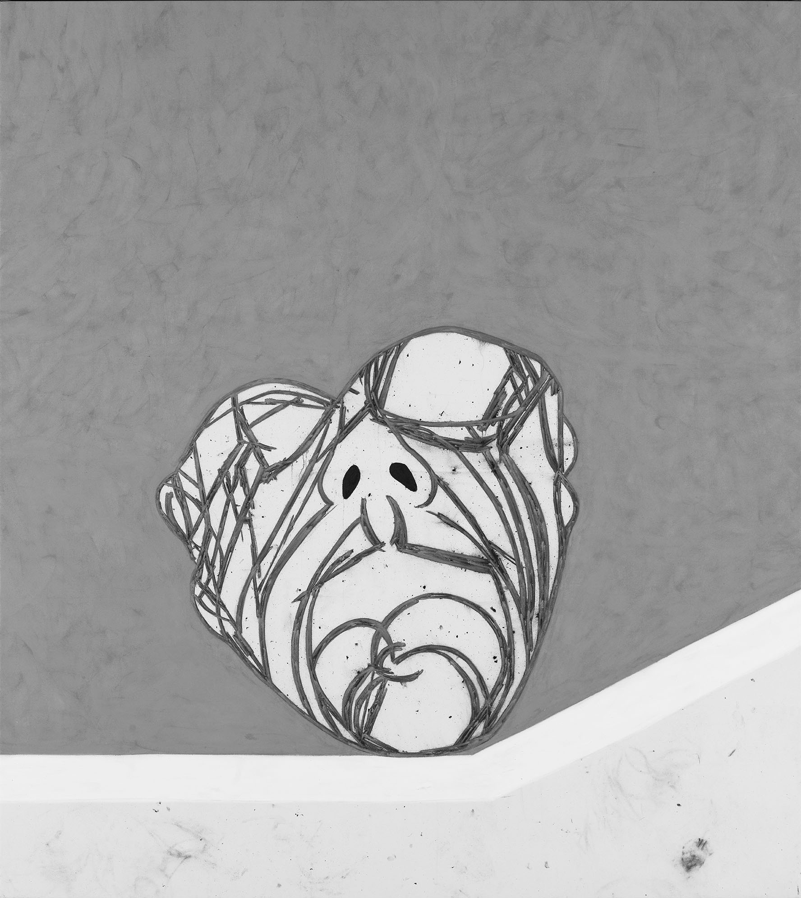
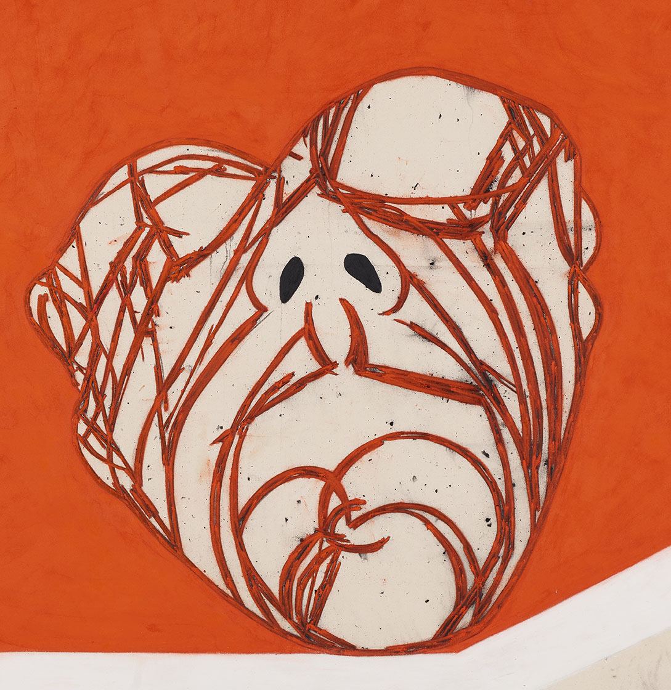
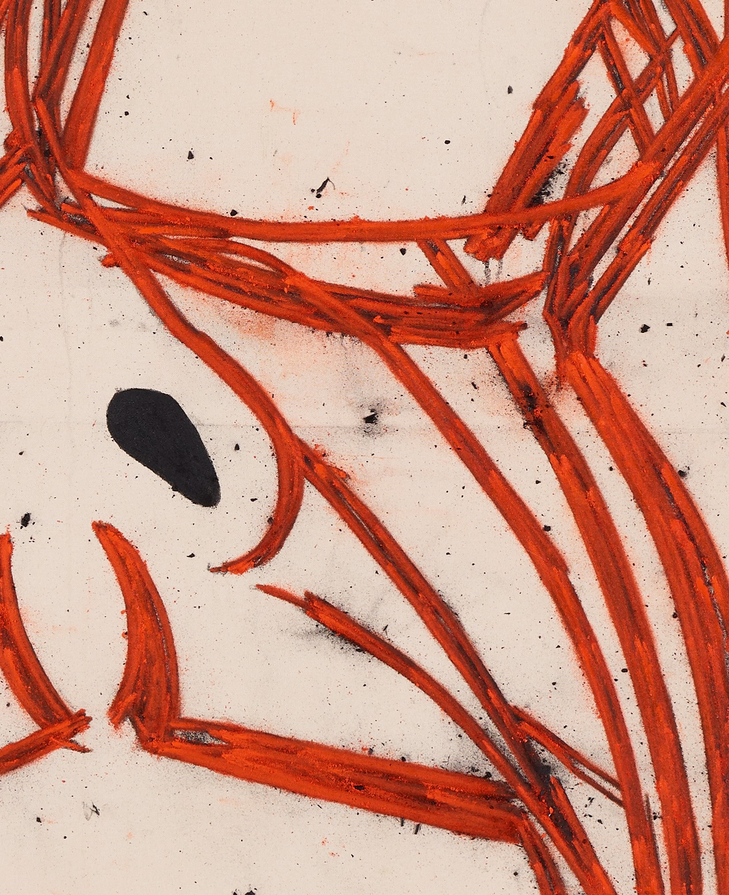
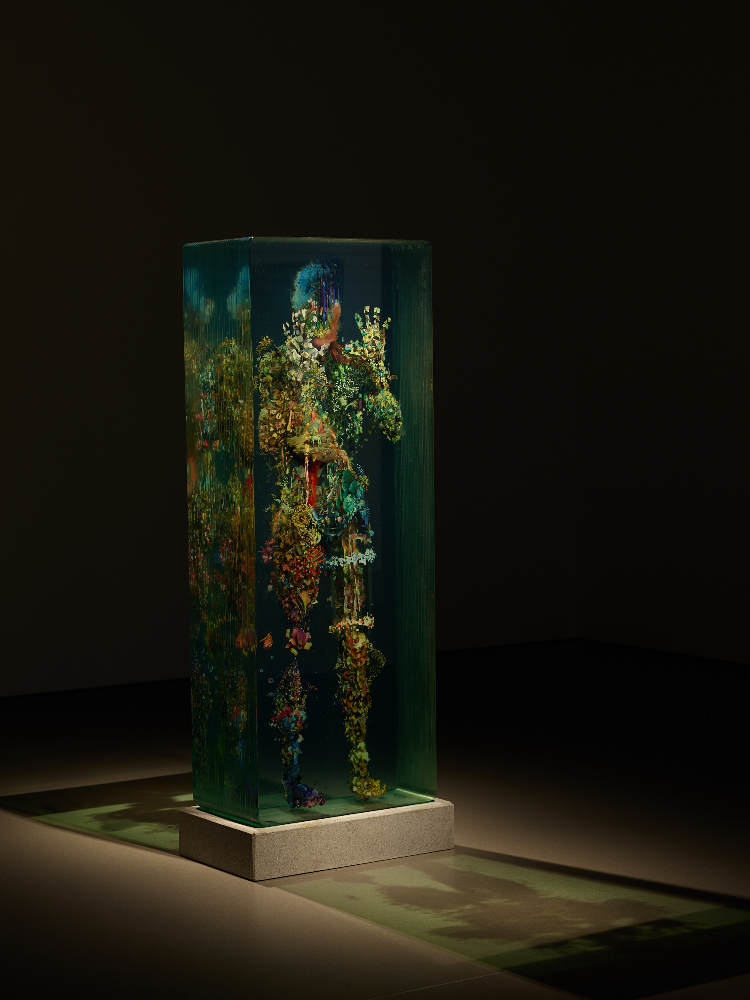
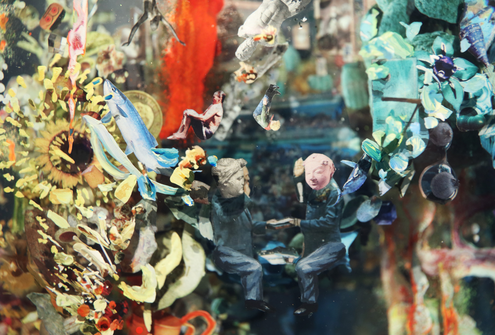
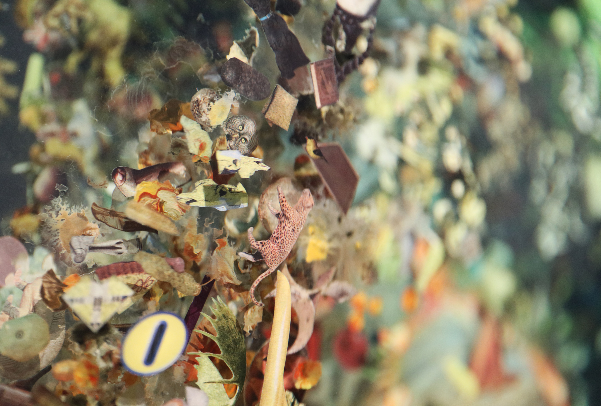
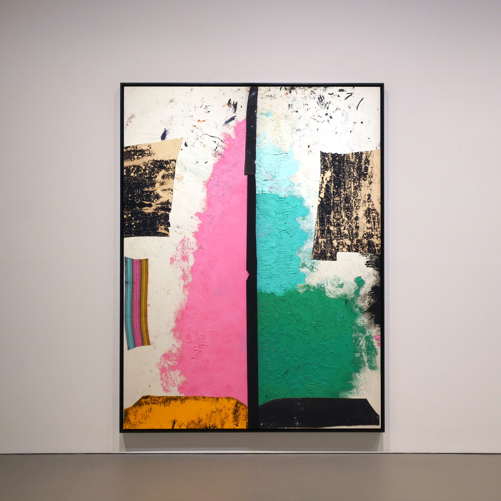
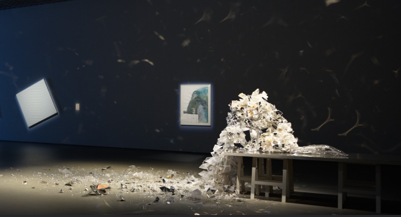
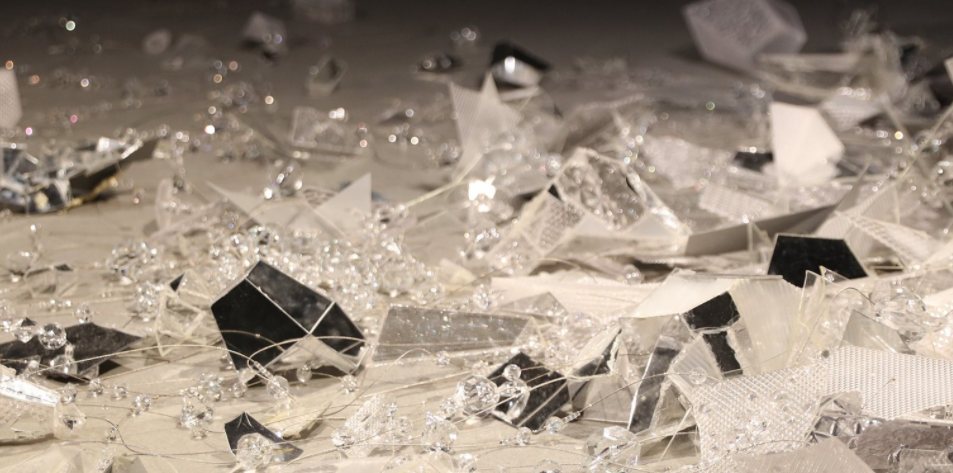

EXHIBTION
- 토니 베반,Head
- Head는 현대 구상 회화 영역에서 독보적인 위치를 차지하고 있는 영국의 화가 토니 베반의 작품입니다. 작품 속 머리의 얼굴은 사실적으로 묘사되지 않는데, 작품의 목적이 특정인의 초상을 그리는 것이 아니라 머리가 상징하는 정신, 기억, 생각, 감정 등을 담아내는 데에 있기 때문입니다. 선명한 다홍색과 무채색의 대비를 통해 강렬한 시각적 효과를 주고 있습니다. 특히 작품 전반에서 보이는 연한 적갈색은 동맥과 힘줄을 연상시키며 신체와의 연관성을 보여줍니다.
- 
- 

더스틴 옐린,
Psychogeography 47- Psychogeography 47
은 멀리서 혹은 가까이서, 사방 어디에서 보든 새로운 시선과 감상을 전합니다.
미국 출신 조각가 더스틴 옐린(Dustin Yellin, 1975~)은 유리 위에 이미지를 그리거나 잡지에서 오려낸 이미지를 붙인 뒤 그 위로 다시 유리를 쌓아 올리는 방법을 반복해 독특한 입체 조각을 만드는 것으로 잘 알려져 있습니다.
은 작가가 오랜 기간 제작해온 시리즈 중 하나로, 서로 다른 이미지들이 모여 하나의 인체를 이루고 있습니다.이 작품은 바라보는 방향과 거리에 따라 다양한 모습을 보여줍니다. 멀리서 볼 때는 인체 모형으로 짐작하며 작품에 다가가게 되지만, 가까이서 자세히 관찰해보면 작품을 이루는 물체의 이미지나 사람의 얼굴과 같은 세부적인 디테일을 발견할 수 있습니다.
- 
- 
- 

- 스털링 루비,창문.솜사탕
- 스털링 루비(Sterling Ruby, 1972-)는 회화와 조각 작업에 콜라주, 도예 등 공예적 기법을 적극 활용합니다. 작품은 주로 자전적인 경험, 사회의 폭력과 압박, 미술사적 주제를 다룹니다. 작가는 자신의 콜라주 작업을 ‘부정한 결합(illicit merger)’이라 칭하며 캔버스 위에 표현주의와 미니멀리즘, 유동성과 정체 등 상반되는 개념을 충돌시키고 서로 어울리지 않는 형상, 기법, 재료 간의 조화를 이루어 냅니다. 창문은 서로 다른 두 공간이 부딪히는 일종의 경계로서 그 자체가 ‘부정한 결합’의 의미를 담고 있기도 하며, 최근 작가가 현 시대의 사건들을 생각했을 때 마음 속에 그려진 장면이기도 합니다. 또한 지평선, 격자, 깃발, 감옥 철창 등 루비가 반복적으로 다루어온 소재들과도 일맥상통합니다.


- 
- 이불,The Secret Sharer
- 개인적 경험을 기반으로 이루어지지 않은 유토피아에 대한 욕망과 좌절을 담아내는 대표적 작가입니다 The Secret Sharer는 작가의 죽은 애완견을 재현한 작품입니다. 개의 입에서 쏟아져 내리는 산산조각 난 크리스털 파편들은 작가와 애완견이 나누었던 교감의 언어이기도 하며, 시간의 흐름에 따라 살아있는 것이 동결되어 결정체가 된 영원성의 상징이기도 합니다. 작가가 작품을 구상하는 단계에서 그린 드로잉도 함께 전시되어 있어 더욱 심도있는 작품 감상을 하실 수 있습니다.

- 
- 